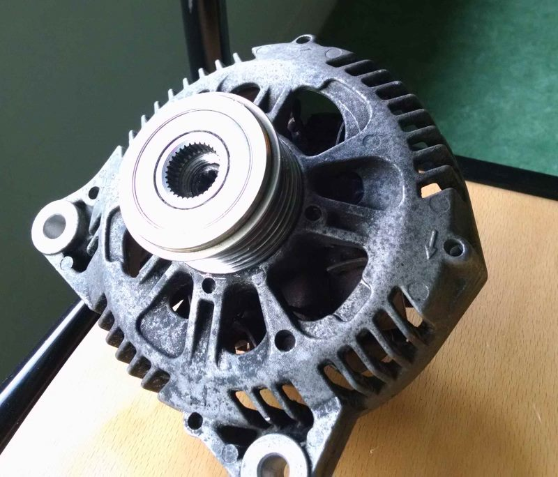
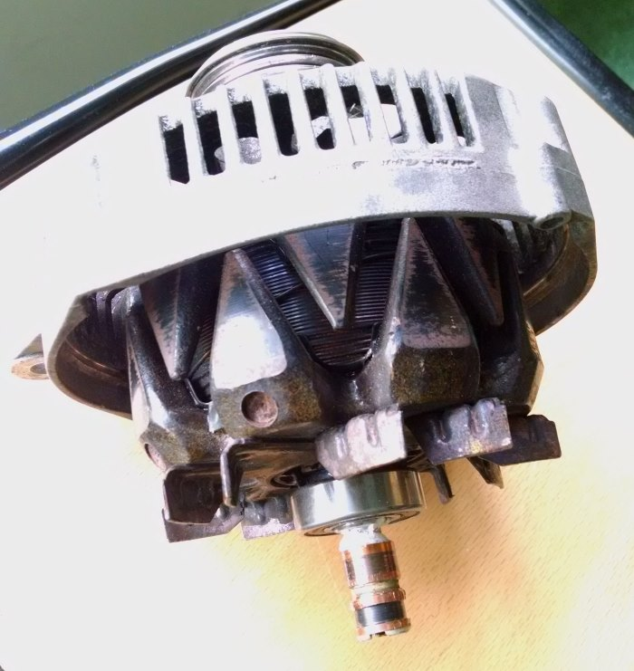
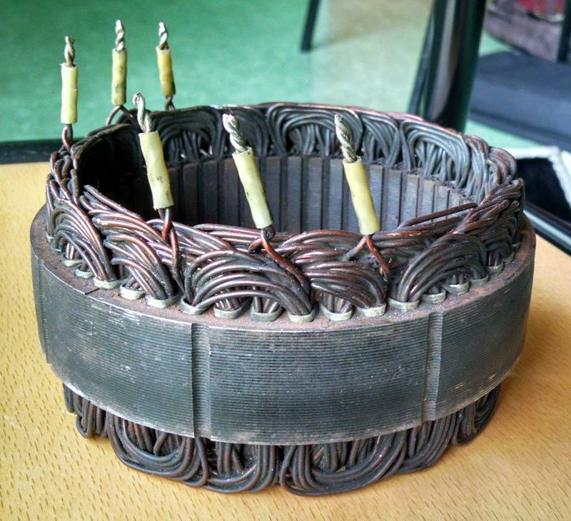
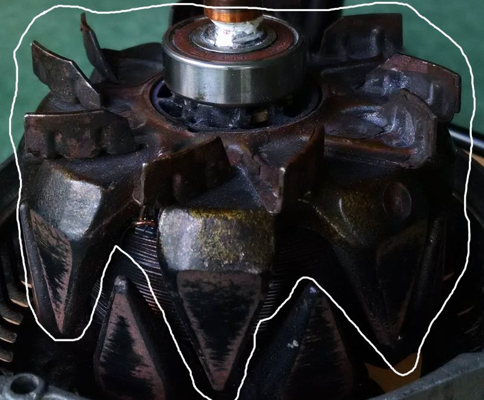
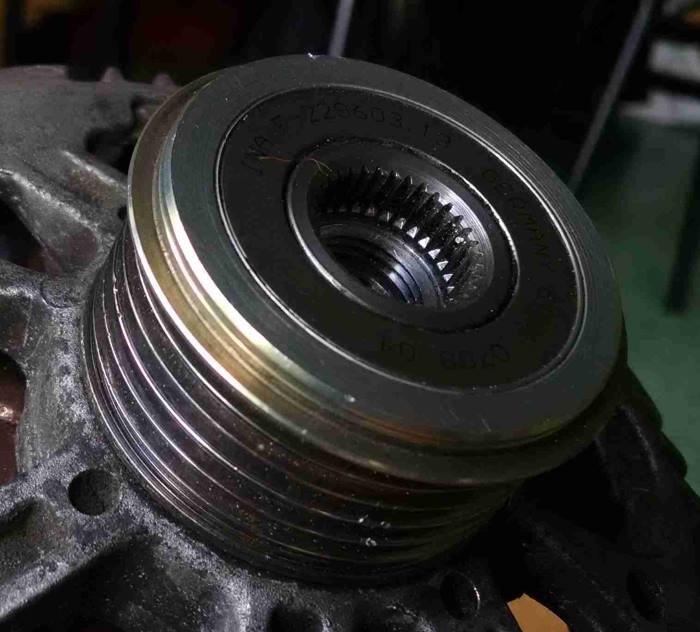
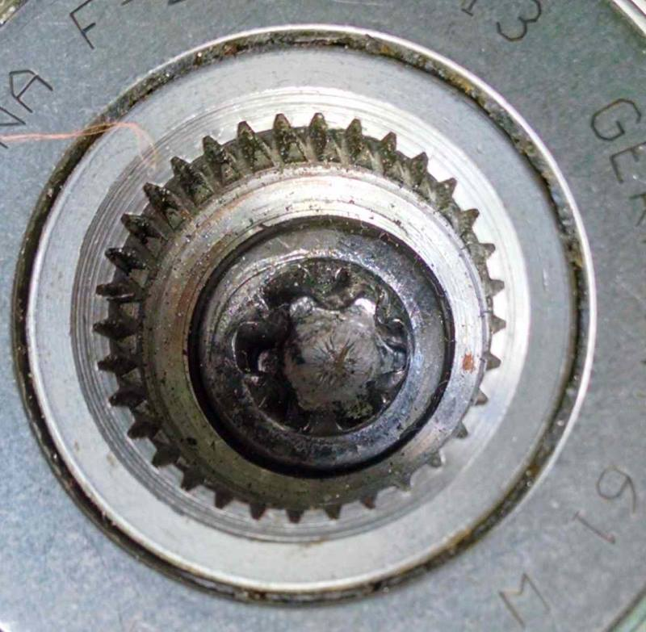
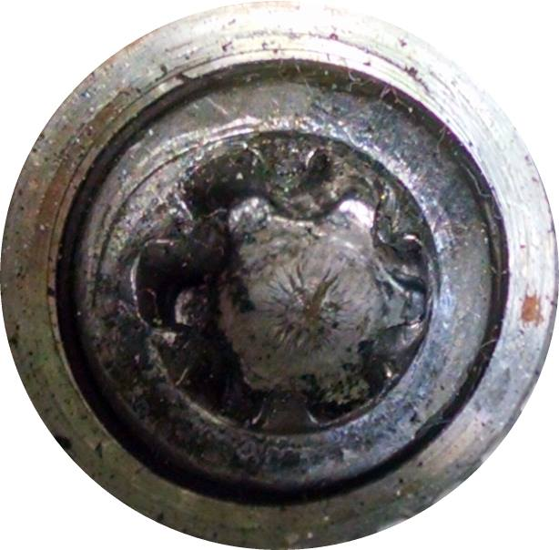
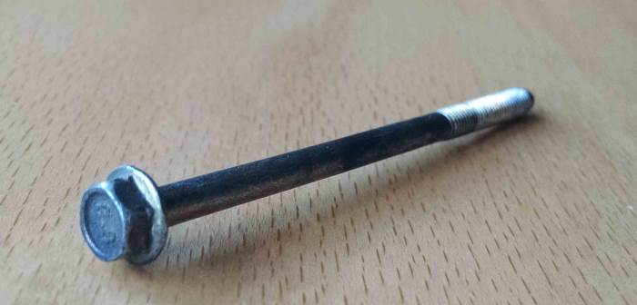
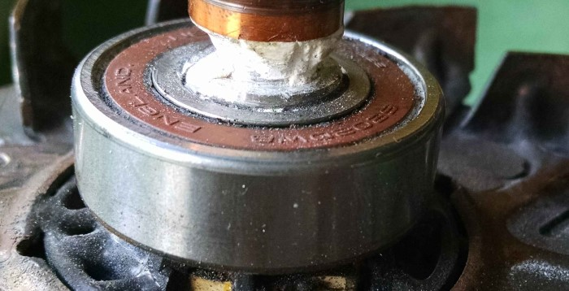
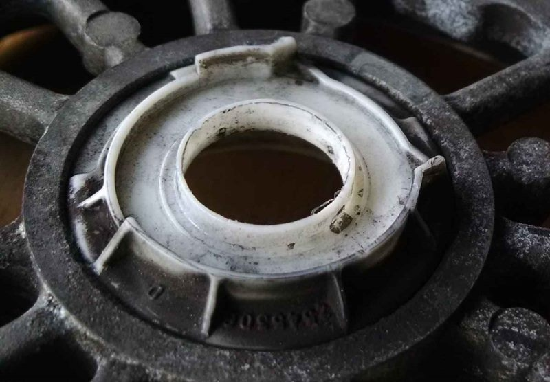

Accueil
Avant-propos
L'afichage de ce site a été optimisé pour des écrans supérieurs à 15 pouces. Nous vous remercions d'utiliser Internet Explorer ou Mozilla Firefox pour disposer des vues 3D interactives grâce à 3dxml. Le plug-in 3dxml ainsi que notre modélisation sont téléchargeables via les liens à gauche en pied de page. N'hésitez pas à cliquer deux fois sur le bouton si un onglet ne s'affiche pas. Le plug-in 3dxml peut-être en train de charger une pièce ce qui ralentit le changement de page.
Présentation de la pièce
Schéma électrique de l'alternateur
Le schéma retenu n'est pas spécifique à notre alternateur.f
Nomenclature
| Pièce | Matériau | Photo | Nombre |
|---|---|---|---|
| Carter inférieur | Acier |  | 1 |
| Carter supérieur | Acier |  |
1 |
| Rotor | Acier + cuivre |  | 1 |
| Stator | Acier + Cuivre |  | 1 |
| Mâchoire | Acier |  | 2 |
| Poulie | Acier |  | 1 |
| Ecrou étoilé | Acier |  | 1 |
| Vis de poulie | Acier |  | 1 |
| Vis | Acier |  | 4 |
| Taquet | Plastique |  |
1 |
| Roulement à bille | Acier |  | 2 |
| Entretoise | Polymère | Détruite lors du démontage | 2 |
| Chapeau | Plastique |  | 1 |
f
Choix préliminaires
Pièces réalisées
Notre choix a été de modéliser en priorité les pièces les plus emblématiques et permettant, au premier coup d'oeil, de reconnaître l'alternateur. Les pièces choisies sont donc: - Les carters - Le stator - Le rotor, comprenant les mâchoires - La poulie - Les divers pièces mécaniques avec les vis, les roulements, les entretoises et le chapeau. N'ont pas été réalisées, les pièces permettant de transmettre le courant au rotor et recevoir le courant induit du stator. Elles sont présentes sur la photo ci-dessous.
Problèmes de démontage
Prendre une pièce usagée, c'est aussi prendre le risque de faire face à quelques menus soucis de démontabilité... C'est d'autant plus vrai pour une pièce automobile qui nécessite souvent des outils spécifiques. Si jusqu'au moment de démonter le rotor, tout se passait plutôt bien, il est venu à l'évidence que pour désolidariser la poulie, le carter inférieur et le rotor, il faudrait un outil peu commun. Une rapide observation de ce qu'il y avait entre les trois pièces a montré qu'il ne serait pas intéressant de mettre en attente certaines modélisations pour pouvoir obtenir l'outil dans un délai d'un mois. Les pièces partiellement inconnues ne représentaient visiblement pas un grand intérêt en terme de modélisation. Toujours dans nos essais de démontage du rotor, nous avons détruit une entretoise faite d'un matériau friable. Elle sera tout de même représentée, les différentes surfaces utiles étant suffisantes pour l'imaginer.Spécificités ignorées des pièces
De par son fonctionnement, l'alternateur contient des bobines. Outre l'absence d'intérêt de les modéliser sur une CAO en TN20 et notre ignorance sur les paramètres (enroulement, diamètre du fil...), le temps que cela demanderait nous a conduit à représenter des pièces pleines à la place.f
Assemblage
Visualisation sur 3DXML
Pour rappel, l'ensemble des pièces est disponible via le lien "Obtenir notre modélisation" sur le lien en bas à gauche.
Choix pour l'assemblage
Si notre objectif de départ était de passer par une modélisation squelette, notre manque de temps et de connaissance sur le sujet nous a orienté vers une solution plus classique. De ce fait, le carter supérieur est utilisé comme base fixe pour l'assemblage des pièces. La nature de l'alternateur fait que la majorité est en contact plan et positionnée sur l'axe du rotor. Dans un souci de réalisme, la rotation de la poulie entraîne celle du rotor. La partie entre la mâchoire et le carter étant non accessible, nous sommes partis de l'hypothèse que l'on retrouvait une configuration entretoise + roulement à bille. Les surfaces utiles imaginées pour ce montage ont été modélisées dans le carter dit inférieur. Le dimensionnement de ces surfaces a été imaginé de manière à reproduire le faible espacement observé entre les ailettes et le carter, et en respectant quelques considérations mécaniques.f
Carter supérieur
Visualisation sur 3DXML
Quelques choix stratégiques
- Les angles pour les aérations ont été relevés via des photos sur le logiciel Adobe Illustrator - Certains détails de formes au niveau de la gorge n'apparaissent pas étant donné notre temps et l'aspect "finition" qu'elles représentent.
Difficultés de modélisations
Sur cette pièce, les difficultés sont avant tout centrées sur les aérations. L'ensemble des autres formes ayant des fonctions mécaniques simples, nous arrivons assez vite à les ajouter par opérations booléennes en récupérant les angles sur nos photos.
f
Carter inférieur
Visualisation sur 3DXML
Quelques choix stratégiques
- Nous avons choisi de ne pas représenter le creux situé au niveau des "oreilles" du carter. Il est possible de les réaliser mais avec plusieurs opérations booléennes sans connaître l'ensemble des mesures. Cela aurait requis beaucoup de tâtonnements afin de pouvoir aboutir à un résultat correct. - Comme pour le carter précédant, certaines opérations esthétiques au niveau des gorges n'ont pas été représentées. En effet, mécaniquement elles semblaient être inutiles pour ce modèle d'alternateur (pas de joint au démontage ou quoi que ce soit qui aille à cette endroit) et le peu d'intérêt de les représenter vu qu'elles sont cachées.
Difficultés de modélisations
Le plus dur dans la conception de cette pièce à été d'harmoniser cette dernière avec le carter inférieur. En effet, les différents trous de vis et de maintien en position se devaient d'être parfaitement coaxiaux. En outre pour des raisons esthétiques, nous devions rendre les angles des ailettes de refroidissement sensiblement égaux (ce que confirme l'analyse des photos). Certains relevés ont donc été réajustés pour y arriver.f
Mâchoires
Visualisation sur 3DXML
Quelques choix stratégiques
- La courbure des ailettes (différentes sur les deux mâchoires) a été copiée depuis une photo sous Photoshop au format SVG. Elle a ainsi pu être reconstruite sous Catia en se basant sur ce profil. - Les nervures étant peu marquées, avoir un résultat similaire sous Catia semblait peu imaginable. Elles ne sont pas modélisées. - Les ailettes du côtés non démontable ont été réparties uniformément du fait de notre impossibilité à les observer.
Difficultés de modélisations
L'exemple est pris sur la mâchoire du côté non démonté.f
Taquet
Visualisation sur 3DXML
Quelques choix stratégiques
Cette pièce ne payait pas de mine à première vue mais il s'est avéré qu'elle cachait bien son jeu. Nous avons négligé les faibles rayons de courbure situés sur les flancs du taquet.
Difficultés de modélisations
Principalement des questions d'ordre géométrique sur "comment partir afin d'obtenir cette chose" mais avec un bon point de départ nous sommes arrivés à quelque chose de très ressemblant.f
Autres pièces
Le reste des pièces est bien plus simple. Elles n'ont pas demandé de techniques particulières afin de les modéliser. Vous pouvez les observer ici mais nous ne nous attarderons pas sur elles.
Visualisation sur 3DXML
f
Remerciements
Nous remercions le garage ADJOCI pièce auto (32 rue de Senlis, Compiègne), pour nous avoir fourni l'alternateur ainsi qu'une pompe de climatisation pour la réalisation de ce projet.Nous présentons tous nos remerciements aussi à notre chargé de TD et professeur, Alain Rassineux pour son aide lors de nos difficultés.
Conclusion

f